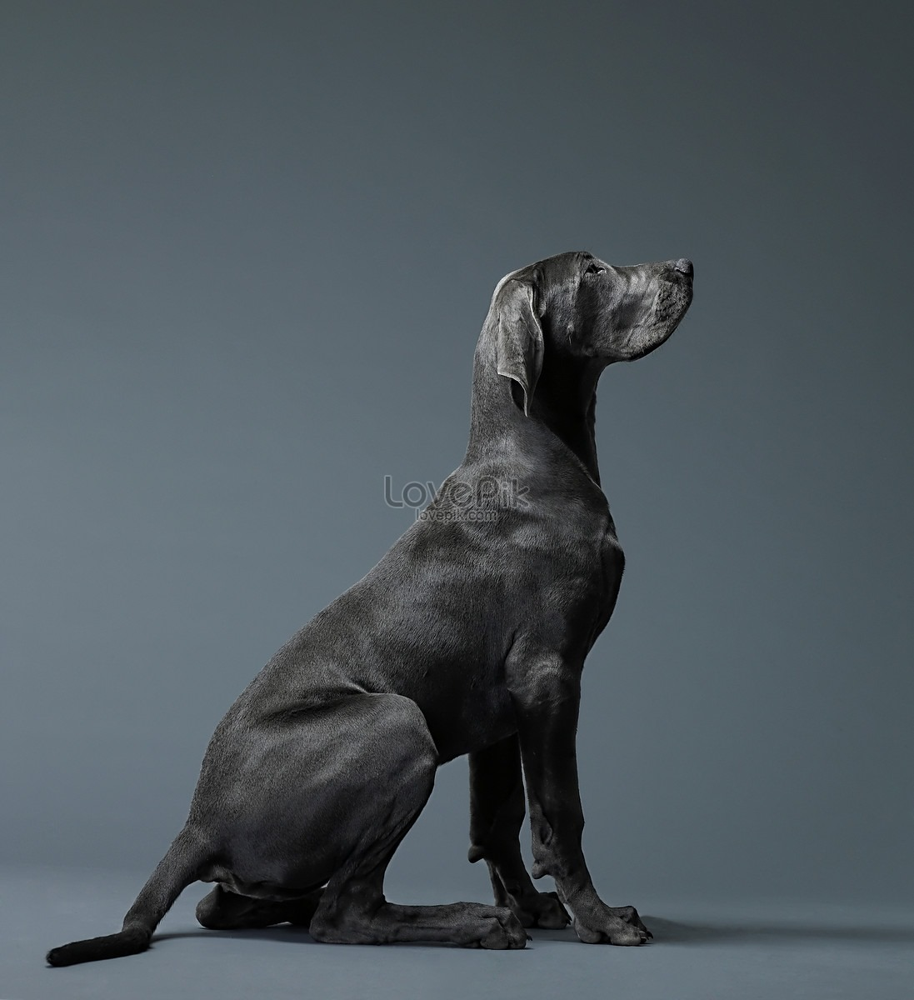

Dogs
Dogs are often called man’s best friend for a reason. They are deeply loyal and form strong bonds with their owners, offering companionship that is both protective and affectionate. Dogs thrive on interaction and are always eager to please, making them excellent partners for outdoor adventures, daily walks, or simply lounging at home. Their ability to sense emotions and provide comfort during difficult times makes them invaluable companions, particularly for families and individuals who seek unconditional love and support.

Cats
Cats, with their independent yet affectionate nature, are ideal companions for those who appreciate quiet companionship. While they are not as demanding as dogs, cats are equally capable of forming deep connections with their owners. They have a calming presence, often curling up beside their humans or playfully engaging with toys. Cats are known for their curious and mischievous personalities, which can bring humor and joy to any home.